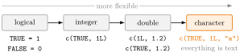

Type Coercion¶
Definition¶
Type coercion is the conversion of values from one data type to another. When values of different basic types are combined into an atomic vector or a matrix, R automatically converts all of them to one common type, the most flexible one present, along the ladder
When logical values become numbers, TRUE becomes 1 and FALSE becomes 0; when numbers or logical values become text, they are written out as strings such as "1" or "TRUE". This implicit coercion happens without a warning.
Explicit coercion uses the functions as.logical(), as.integer(), as.numeric() and as.character(). Converting down the ladder can fail: a string that does not represent a number becomes NA, and as.numeric() then gives the warning NAs introduced by coercion.
Interpretation¶
An atomic vector must have one type, so R has to choose one when the inputs disagree. It picks the type that can represent all the values without losing information: every logical value can be written as an integer, every integer as a double, and every value at all as text.

Read the figure from left to right: combining any type with one further to the right moves the whole vector to the right-hand type. The examples under the arrows are those of Example 1: c(TRUE, 1L) is integer, c(1L, 1.2) and c(TRUE, 1.2) are double, and a single character value such as 'a' makes everything character (orange), the end of the ladder.
The rule TRUE = 1 and FALSE = 0 is the computer's version of an indicator function. It is useful: the sum of a logical vector counts how many values are TRUE (counting with logical vectors). Lists and data frames are not coerced as a whole, because each element or column keeps its own type.
The dangerous side is that coercion is silent. One text entry such as "missing" in a column of numbers turns the whole column into character, and calculations fail later, far from the cause. A related trap is the factor: as.numeric() applied to a factor returns its internal integer codes, not the numbers its labels show, so the labels must first be turned into text with as.character().
Key Results¶
- Implicit coercion follows logical → integer → double → character; the result has the type furthest along the ladder among the inputs.
TRUEbecomes 1 andFALSEbecomes 0 when converted to a number.- Implicit coercion in
c(),matrix(),cbind()andrbind()gives no warning. - Explicit coercion with
as.*()returnsNAfor values that cannot be converted;as.numeric()andas.integer()then warn. - Lists and data frames keep the types of their elements and columns.
- For a factor,
as.numeric(f)gives the level codes;as.numeric(as.character(f))gives the numbers written in the labels.
Examples¶
1. The ladder.
typeof(c(1L, 1.2))
#> [1] "double"
typeof(c(TRUE, 1L))
#> [1] "integer"
typeof(c(TRUE, 1.2))
#> [1] "double"
typeof(c(TRUE, 1L, 'a'))
#> [1] "character"
c(TRUE, 1L, 'a')
#> [1] "TRUE" "1" "a"
2. A mixed matrix becomes a character matrix.
m <- cbind(c('a', 'b', 'c'), c(1, 2, 3), c(TRUE, FALSE, TRUE))
m
#> [,1] [,2] [,3]
#> [1,] "a" "1" "TRUE"
#> [2,] "b" "2" "FALSE"
#> [3,] "c" "3" "TRUE"
typeof(m)
#> [1] "character"
The quotation marks show that the numbers and logical values have become text; m[2, 2] + 1 would fail.
3. Logical values as numbers.
4. Pitfalls: one text entry, and factors.
x <- c(3.5, 4, "missing")
x
#> [1] "3.5" "4" "missing"
as.numeric(x)
#> [1] 3.5 4.0 NA
#> Warning message:
#> NAs introduced by coercion
f <- factor(c("10", "20", "10"))
as.numeric(f)
#> [1] 1 2 1
as.numeric(as.character(f))
#> [1] 10 20 10
The entry "missing" made x a character vector; converting back recovers the two numbers and turns the text into NA. The factor stores the codes 1 and 2 for its two levels "10" and "20", which is what as.numeric(f) returns.
5. Down the ladder without NA. Converting a double with decimals to an integer gives no NA and no warning, as long as the value lies within the integer range; it drops the decimals, towards zero:
The values are cut off, not rounded: 2.9 becomes 2, not 3, and -2.9 becomes -2, not -3. Information is lost silently, so use round() first when rounding is meant.
Prerequisites¶
Related Concepts¶
- Matrices in R
- List
- Data Frame
- Counting with Logical Vectors
- Factor
- Missing Values
- Indicator Function
Sources¶
- Programming for EOR · Week 1
- Lecture script Data Types and Structures (Part 2), sections "Type Coercion" and "Detecting Types"
Aliases: coercion, implicit conversion, automatic type conversion, explicit conversion, as.numeric(), as.character(), NAs introduced by coercion Keywords: coercion ladder, logical to number, character wins, explicit conversion
Last updated: 12 November 2026 15:46
Type CoercionCounting with Logical VectorsFactorAtomic Data TypesAtomic VectorMatrices in RListData FrameMissing ValuesIndicator Function